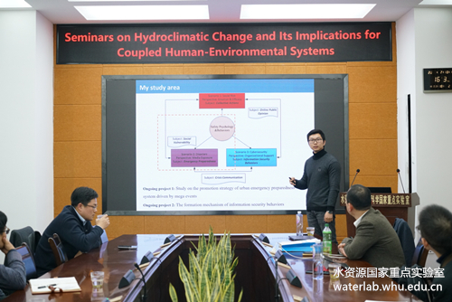

过去活动
研究生赵嘉卿在第六届风险灾害危机多学科论坛上宣讲医护人员应急准备行为论文
May29, 2021

应武汉大学水资源与水电工程科学国家重点实验室金钟硕教授邀请，在Seminars on Hydroclimatic Change and Its Implications for Coupled Human-Environmental Systems作会议报告
Dec13, 2019

在牛津大学举行的Cyber Science 2019国际学术会议上交流信息安全行为研究成果
Jun4, 2019